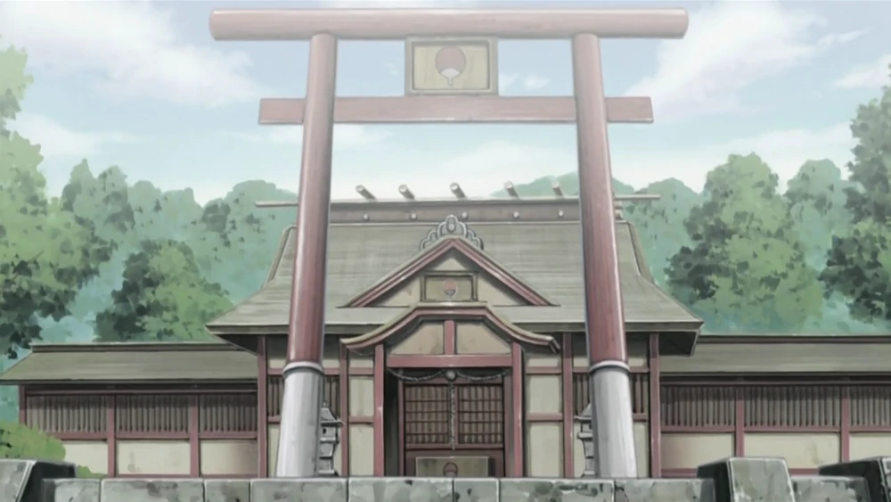
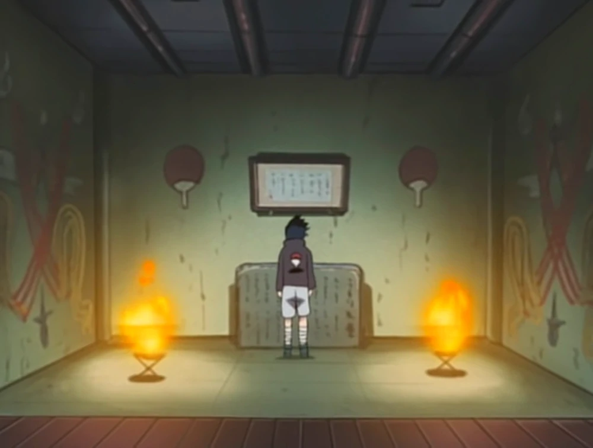

Le Grand Temple Naka des UCHIWA
Le Temple Naka (南賀ノ神社, Naka no Jinja, Kana : Temple de Nakano, Signifiant littéralement : Temple Shintô de la Joie du Sud) est un temple situé à Konoha.
Dans la pièce principal, sous le septième tatami en partant du fond à droite, se trouve l'entrée secrète de la salle de réunion du clan Uchiwa. À cet endroit se tient un monument en pierre qui contient les secrets du clan et peut seulement être lu avec un dôjutsu spécifique.
Afin d'accéder à la pièce principal, une séquence de mudrâ est requise pour déplacer la pierre qui recouvre l'entrée. Le sceau en lui-même a le Sharingan en son milieu et est encerclé avec une formule de sceau. L'étage du haut du temple fut détruit lors de l'invasion de Pain sur Konoha, bien que les secrets cachés se trouvant en dessous n'ait pas été touchés et furent plus tard accédés par Taka et Orochimaru durant la Quatrième Grande Guerre Shinobi. À la différence du reste du village, le temple ne fut pas reconstruit.
👉🏽 Ce lieu apparut dans Naruto: The Broken Bond, qui débloque un succès sur Xbox 360 et appelé « Voie des Ténèbres ». Le temple Naka était considéré dans le jeu comme le repaire de Sasuke ou la salle secrète de Sasuke ; Il est cependant inconnu si à l'époque les producteurs du jeu savaient ce qu'était ce temple, car il a seulement été montré être un lieu où Sasuke fut montré en train de pleurer à cause du Déclin du Clan Uchiwa et des pensées de vengeance contre Itachi Uchiwa. Ce lieu peut être trouvé dans Konoha dans le jeu, mais il est sous l'île dans la zone sud-ouest du village au lieu de sous la salle principale dans le manga.
👉🏽 Ce lieu fut aussi utilisé comme un stage non déblocable dans Naruto: Gekitô Ninja Taisen! 4.